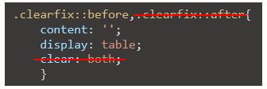
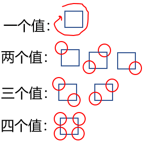
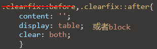

外边距的折叠：
1.都为正取大值。
2.一正一负取和。
3.都为负，取大绝对值。
1.会发生折叠传递现象（子元素设置的外边距传递到父元素上）
2.传递现象的解决办法：原则上父子间有东西就不会发生传递，比如是边框，亦或是加上一个空的伪元素.所以只要在一个父元素之前加一个空的表格型（块元素不行，因为要用内容撑开才有位置）伪元素就行，如图：
行内元素的盒模型：
1.不可以设置宽高。
2.可以设置padding，border，margin。
3.垂直方向上不会影响布局（只掩盖）。
轮廓阴影和圆角：
1.本质：一种不会影响布局的边框。
2.用法：outline属性后面的值和border完全一样。
2.用法：box-shadow属性，前两个值为偏移量（可以是负值），第三个值是模糊半径（可以不写，越大越模糊），第四个值是颜色（可以加透明颜色效果）。
3.实例：box-shadow: 100px 100px 150px rgba(288,34,57,.8);
1.属性设置方式：border-radius属性（只能画圆）或者border-top-left等类似单独属性（能画椭圆）。
2.值：%或px（%是宽和高所分别对应的百分比；px是以px为半径作圆）。
3.值的数量：
（1）border-radios：
（2）border-top-left等：
一个值：以该值为半径作圆。
两个值：以第一个值为长，第二个值为宽的矩形画弧。
4.设为圆：宽高一样， border-radius设为50%。
浮动：
1.浮动元素会脱离文档流，不再占据文档流的位置。（无论什么元素脱离文档流后都变成块元素，并且不独占一行，宽高默认被内容撑开。）
2.设置浮动以后元素会向父元素的左侧或右侧移动。
3.浮动元素默认不会从父元素中移除。
4.浮动元素向左或向右移动时，不会超过它前面的浮动元素.
5.如果元素的上边是一个没有浮动的块元素，则浮动元素最多就是和它一样高。
6.浮动元素不会盖住文字，文字会自动环绕在浮动元素周围。
1.高度坍塌的产生原因：未浮动时，父元素的高度默认是被子元素撑开的，当子元素浮动后，其会脱离文档流，无法撑起父元素高度，导致父元素高度坍塌。
2.开启bfc的好处：1.不会被浮动元素所覆盖 2.子元素和父元素外边距不会重叠 3.可以包含浮动子元素。
3.开启bfc解决办法：1.设置元素浮动 2.设置元素为行内块元素 3.将元素的overflow设置为非visible的值。
4.clear解决办法：clear可以清除浮动对元素的影响（可选值有left，right，both），故只要给浮动子元素设置一个带clear的兄弟元素就可以解决高度坍塌。（不太好）
5.clear加伪类完美解决高度坍塌：在父元素最后加上一个清除浮动的::after伪类元素，由于此伪类为行内块，所以将其转换为块元素就可以了，如图：
